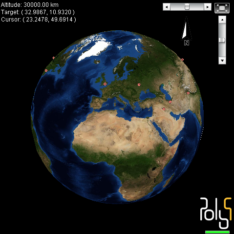

Archivio per la categoria ‘Strumenti’
20 agosto, 2008 | di Andrea Borruso
Mobile GMaps è un’applicazione freeware che mostra sui vostri telefonini e palmari (con supporto JAVA J2ME) mappe da Yahoo! Maps, Windows Live Local (MSN Virtual Earth), Ask.com, Open Street Map ed altre sorgenti.
Funziona su molti dei cellulari rilasciati sul mercato negli ultimi tre anni (compresi Windows-Mobile/PocketPC/Palm). Io l’ho installato e testato sul mio Nokia E61i, scaricandolo direttamente con il telefonino dal sito WAP: http://wap.mgmaps.com/

L’icona associata non mi piace TANTO, ma questi sono dettagli. Al lancio del programma vengono tipicamente poste due domande:
- vuoi consentire all’applicazione di raccogliere le informazioni sulla posizione geografica corrente?
- vuoi consentire all’applicazione di connettersi alla rete per scaricare dati?
Alla prima risponderete di si, se avrete nel vostro telefonino un GPS integrato o un’antenna GPS connessa.
Alla seconda è necessario rispondere affermativamente per poter scaricare le basi web citate sopra.
Se risponderete si ad entrambe, avrete una schermata come quella sottostante.

Il pallino blu mostra la posizione GPS. In basso a destra le coordinate in gradi/minuti/secondi e la velocità in km/h, in basso a sinistra il Menu principale, ed in alto al centro un tooltip con dei suggerimenti per gli shortcut da tastiera. Il tasto “0” ad esempio consente di cambiare il tipo di base cartografica: passare ad esempio da Live Maps (lo sfondo dello screenshot soprastante) a Yahoo! Maps.
I tipi di mappa disponibili, eventualmente da abilitare, li troviamo andando su Menu>Settings>Map Types (vedi figura sotto).

Le opzioni offerte dal programma sono numerose, e non andrò nei dettagli. Ciò che vorrei condividere con voi è una particolare funzione di grande utilità, a cui accenno tra le righe del titolo di questo post.
Andiamo con ordine.
Domani andrò per la prima volta a Linosa . Mi porterò la mia antenna/data-logger GPS, il mio telefonino e la mia macchina fotografica. Il fine principale è quello di rilassarmi e godermi questo piccolo angolo di paradiso, ma “malato” di informatica e GIS vorrei fare anche le seguenti cose:
- mappare le principali strade di Linosa per poterle caricare su OpenStreetMap (ancora non sembra coperta)
- fare qualche foto da inviare geotaggata tramite Shozu su Flickr
- memorizzare sul telefonino qualche bookmark geografico su Mobile GMaps
Per fare tutto questo mi piacerebbe avere una buona base cartografica digitale sempre disponibile e di comodo trasporto. Mi piacerebbe avere in particolare la foto di Linosa offerta da
Microsoft Live Maps, in quanto è quella al momento di maggiore dettaglio (sembra una di quelle del
progetto it2000). E gradirei usarla in combinazione con il mio dispositivo GPS.
Non so però se a Linosa ci sia una buona copertura per il segnale dei cellulari; se ci fosse non vorrei “buttare” soldi connettendomi in real time con Live Maps tramite Mobile GMaps.
La soluzione per fortuna c’è, e sta dentro una delle modalità di utilizzo di questa applicazione: quella offline.
Mobile GMaps è capace di leggere da una card MicroSd del vostro telefonino una copia cache della cartografia online che desiderate, senza costringervi a connettervi alla rete.
Ci sono diverse
modalità e strumenti, per creare una copia cache della cartografia online da leggere con questa applicazione. Vi illustrerò quella che ho usato e testato per Linosa:
- andate sul sito http://www.mapcacher.com/, e zoommate su Linosa (o sull’area di proprio interesse)
- disegnate un quadrilatero, facendo click con il sinistro del mouse sulla mappa attorno all’area di interesse (vedi figura qui in basso)

- scegliete l’intervallo di livelli di zoom che desiderate acquisire per l’area (parametro Zoom level). Più è alto il livello, maggiore sarà la risoluzione. Nel mio caso, un’area molto piccola, ho scelto i livelli da 13 a 17
- scegliete la qualità di output delle immagini tramite il parametro “Level of detail”. Io ho scelto la qualità media e sono soddisfatto.
- scegliete il provider ed il tipo di mappa. Nel mio caso Microsoft Live Aerial Images
- cliccate sul tasto “Generate” e scaricate il file che vi viene proposto (ha estensione .map)
A questo punto dovrete scaricare ed installare gMapMaker (qui l’ultima versione). Questo programma è quello che fa il lavoro “sporco”: si connette con il provider cartografico scelto e scarica – tassello per tassello, livello di zoom per livello di zoom – la base scelta. Il file .map di cui sopra è un file indice, che contiene le informazione necessarie a gMapMaker per portare a termine il download dei tasselli di mappa. L’interfaccia del programma è quella della figura sottostante.

Questi i passi da seguire:
- scegliere la cartella del vostro hard-disk – “Cache folder” – dove archiviare la copia cache della cartografia scelta
- scegliere come “Operating mode” quello visibile in figura
- cliccare sul tasto “Go” e selezionare il file .map scaricato precedentemente
Dopo alcuni secondi partirà il download. I tempi possono essere anche molto lunghi, in dipendenza delle dimensioni dell’area di studio scelta e dei livelli di zoom selezionati. Nel mio caso, pochi kilometri quadrati, sono bastati pochi minuti. Al termine del download, troverete all’interno della cartella di destinazione una cartella denominata “MGMapsCache”. Copiatela in una cartella della vostra card MicroSD (ad esempio “/mobileGmaps/Linosa”, ed avrete quindi “/mobileGmaps/Linosa/MGMapsCache”).
Avviate a questo punto Mobile GMaps sul vostro cellulare/palmare, aprite il menu, selezionate Settings>Map browsing ed attivate le opzioni “Stored Maps” e “Offline Mode” (come nella figura sottostante).

Scorrete la schermata verso il basso, e valorizzate il parametro “Storage Path” con il percorso della scheda MicroSD scelto prima (nel mio caso “/mobileGmaps/Linosa/MGMapsCache”). Dal menu “Opzioni” salvate queste impostazioni e riavviate l’applicazione.
Non vi resta che scegliere il tipo di mappa coerente con quello di cui avete creato una copia cache, e zoomare sull’area scelta. Nell’immagine in basso il risultato che ho ottenuto, in cui è visibile uno dei crateri spenti di Linosa; anche il mio GPS è al momento spento (sono ancora “chiuso” tra le mura di casa) e Mobile GMaps non riesce quindi leggere le coordinate.

Domani sarò a Linosa e potrò usare quando vorrò questo comodo supporto digitale, senza dovere attendere inutili tempi lenti di download e/o affrontare costi di connessione. Scrivere questo post a fine Agosto, e legarlo alle vacanze sarà per molti fastidioso. Per molti magari domani sarà l’ultimo giorno di ferie, ma per me è in un certo senso il primo; abbiate pazienza. Credo inoltre che l’utilità di una copia offline, vada aldilà delle stagioni.
Qui sotto una mappa dove appariranno le foto che da Linosa caricherò su Flickr.
Ci “vediamo” al ritorno dalle ferie; buon fine Agosto a tutti.
Posted in Strumenti | 23 Comments »
5 febbraio, 2008 | di Andrea Borruso
TatukGIS viewer è una delle più piacevoli scoperte software fatte di recente, ed ancora non finisce di stupirmi. Si tratta probabilmente del miglior GIS viewer gratuito per windows, in termini di funzioni, flessibilità d’uso e performance.
Noi lo usiamo molto in ufficio soprattutto per dare un rapido sguardo a nuovi dati ricevuti in (quasi) qualsiasi formato GIS, o per aprire al volo un vecchio file d’archivio. E’ molto comodo per leggere rapidamente file raster compressi (ECW/ECWP, MrSID, JPEG2000), senza passare da procedure di import e/o conversione.
Utilizzandolo mi sono chiesto se ne esistesse una versione “portatile” da caricare su pendrive USB, che non ne richiedesse l’installazione, e che fosse eseguibile direttamente dal driver USB. Ho girato la domanda al supporto tecnico ed ho scoperto che TatukGIS viewer è nativamente portatile: basta infatti copiare la cartella di installazione (di solito la cartella “C:\Programmi\TatukGIS\Viewer”) nella pendrive. Fatto questo, potremo lanciare l’applicazione da qualsiasi computer a cui connettiamo la nostra pendrive, entrando nella cartella che abbiamo copiato e facendo doppio click sul file “ttkVWR.exe”.
Alcune delle altre caratteristiche:
- Lettura dei seguenti formati
- Raster: TIFF/GeoTIFF, ECW/ECWP, MrSID, JPEG2000, JPEG, IMG, BMP, BIL/SPOT, PNG, CADRG,
- Vettoriali: SHP, E00, MIF/MID, TAB, DXF, DGN, TIGER, GML, KML, VPF, GDF, DLG, SDTS, GPX, CSV
- SQL database layer: ESRI Personal Geodatabase, Geomedia® Access Warehouse, OPENGIS® Simple Features for SQL implementation, TatukGIS binary, TatukGIS PixelStore
- Grid/DTM: ADF, BT, DT0, DT1, DT2, FLT (ArcInfo Float Binary Grid), GRD (ArcInfo ASCII Grid), GRD (Surfer ASCII Grid-DSAA)
- Georeferenced Images: GeoTIFF, World File, and TAB base
- Tutti i formati sono supportati nativamente, senza che sia necessario importarli in qualche formato interno
- Integrazione di file di formato differente nello stesso progetto
- Lettura di file progetto ESRI ArcView®, ArcExplorer®, o MapInfo Professional®
- Zoom in/out, pan
- Definizione di scale personalizzate di visualizzazione e stampa
- Rapidità di gestione di grosse moli di dati (shapefile sino a 2 gigabyte)
- Indicizzazione R-tree
- Gestione degli stili grafici dei layer vettoriali (colori, stili, riempimenti, contorni, simboli, trasparenza, etc.)
- Utilizzo di file CGM, WMF, e TrueType per la simbolizzazione degli elementi grafici
- Creazioni di grafici a torta
- Interrogazioni spaziali (per punto, linea, cerchio, rettangolo, poligono) basate sul Dimensionally Extended 9 Intersection Model (DE-9IM).
- Interrogazione SQL per attributo
- Misura di distanze, aree e perimetri
- Importazione di dati GPS a partire da file in formato GPX
- Creazione di Hotlink
- Map hint automatici
- Stampa in formato PDF
- Export di qualsiasi vista in formato TIFF/GeoTIFF (w/ LZW), JPEG, PNG, BMP, PixelStore
- Mosaicatura di più immagini giù georeferenziate in un unico file
Vi consiglio di provarlo.
Posted in Strumenti | 4 Comments »
6 dicembre, 2007 | di Andrea Borruso
Da qualche giorno ho scoperto Poly9 FreeEarth, un applicazione web che vi consente di inserire un globo 3D interattivo dentro una pagina web. E’ un’applicazione Flash, che da la possibilità di posizionare sulla nostra amata Terra diverse tipologie di layer:
- punti attivi
- GeoRSS feeds
- Etichette
- Polilinee
- Immagini
- Layer WMS
- …
La documentazione è completa e ricca di esempi. Qui sotto un globo con posizionato sopra il feed GeoRSS della Reuters. Qui il codice che ho usato per l’esempio.
Aggiornamento: grazie ad Angelo ho scoperto che c’è un problema di visualizzazione con Internet Explorer, usando gli iframe. Con Firefox non ci sono problemi. Per tale ragione ho creato un link che apre una pagina esterna.

Posted in Strumenti | 1 Comment »
1 novembre, 2007 | di Gerlando Gibilaro
Il mondo delle applicazioni presenti sul web specificatamente dedicate alla tecnologia mobile è in continuo aumento.
Tale circostanza ci porta sicuramente a riflettere sul mutamento delle esigenze degli utenti (professionali o meno), proiettate a costruire il proprio ufficio/casa virtuale in modo decentrato rispetto alla postazione fissa di lavoro.
Il tutto si può riassumere con il motto: qualunque luogo è il mio luogo.
In tal senso possiamo ricordare, a titolo esemplificativo, fra i vari software: portable apps (your digital life anywhere); Google mobile, ovvero le applicazioni di Google per cellulari (ricerca Google, Google maps, Gmail, Calendar);il fantastico oneSearch di Yahoo, le applicazioni di Flickr specificatamente dedicate al posting sul blog tramite cellulare (qui un articolo esemplificativo, ed immaginiamo quali utilizzi possono inventarsi architetti, periti, restauratori, geologi grazie a questo applicativo…).
Oggi vorrei parlare di Smart to go, ovvero un leggero software per cellulari che consente di configurare il proprio dispositivo mobile al pari di un navigatore satellitare.
Premetto subito che questa applicazione può essere usata anche senza antenna gps, in tal caso si rinuncerà al satellitare, per avere, invece, sul proprio telefonino una comodissima guida con le mappe delle città, con la possibilità aggiuntiva di visualizzare i luoghi su di una mappa, di creare e di simulare i percorsi stradali, di visualizzare gli indirizzi ed i numeri di telefono di utenze commerciali (posteggi, benzinai, banche) e ricreative (cinema, teatri, parchi).
Cosa serve:
- L’applicazione è stata specificatamente ideata per i seguenti cellulari NOKIA: 6100, 6100classic, E61, E61i, E90, N70, N72, N73, N76, N93i, N95. Tuttavia, per i dispositivi non presenti in elenco con Windows Mobile, si può provare ad usare la versione generica;
- una sim card;
- un cavo usb specifico per connettere il proprio cellulare al pc;
- un smart card da almeno 1Gb;
- un lettore di smart card;
- un antenna gps bluetooth (se si vuole avere la funzionalità del navigatore).
Cosa scaricare:
- scaricare ed installare sul proprio pc Nokia pcSuite nella versione specifica per il proprio cellulare;
- scaricare smart2Go sul proprio pc (è possibile scaricarlo direttamente sul proprio cellulare tramite sms, ma in questo caso dovrete accollarvi i costi di connessione);
- scaricare ed installare il Map Loader sempre sul proprio pc (lo si può scaricare anche dal sito della NOKIA qui).
Operazioni da eseguire:
- Una volta effettuato il download di Smart to go e dopo aver collegato tramite usb il proprio cellulare al pc, lanciare direttamente l’applicativo (che avrà una icona simile a quelle del Nokia pc suite. Quest’ultimo programma provvederà direttamente all’installazione sul cellulare);
- A questo punto scollegare il cellulare dalla porta usb, estrarre la smart card dal cellulare ed inserirla nel relativo lettore. Tale ultimo passaggio per me è stato obbligato, in quanto (non so per quale arcano motivo), il map loader non riesce a vedere il cellulare tramite porta usb, per cui risulta necessario installarlo direttamente su smart card.
- avviare il map loader dal pc e seguire le semplici istruzioni di installazione sulla smart card del cellulare. In tal senso potrete scegliere quali mappe da installare ed anche alcune applicazioni aggiuntive quali la voce guida durante la navigazione (gps) o la simulazione di percorso (che funziona anche senza antenna gps).
Sui siti linkati trovate tutte le relative istruzioni, inoltre potete scaricare qui in pdf il manuale d’uso del Nokia Maps (una trentina di pagine veramente esaustive).
Una notazione che mi sembra rilevante evidenziare è quella inerente alle impostazioni di rete.
Infatti, una volta avviata l’applicazione sul vostro cellulare, se la relativa mappa non dovesse essere rintracciata automaticamente (cosa assolutamente rarissima, ma può accadere), verrete collegati alla banca dati delle mappe. In questo caso sono a vostro carico i costi di connessione.
Potete, allora, impostare il vostro cellulare disabilitando questa impostazione predefinita in questa maniera: avviare il maps – opzioni - impostazioni - rete - utilizza rete – mai.
Alcune funzionalità
Volevo segnalare alcune funzionalità di questo applicativo mobile, proprio al fine di evidenziare la sua completezza e la sua utilità.
Il MENU’ IMPOSTAZIONI
1) Nel menù Impostazioni, alla voce Itinerario potete scegliere come impostare i criteri di ricerca ed elaborazione: ad esempio scegliere il mezzo di trasporto (in auto o a piedi); Selezionare l’itinerario da visualizzare (più veloce, più breve); se mostrare le autostrade, gallerie, i traghetti, i pedaggi.
2) sempre nel menù Impostazioni- Generale potete scegliere il sistema di misurazione (metrico o imperiale); la retroilluminazione durante la navigazione, la guida vocale (che potete scaricare attraverso il map loader, non è presente di default).
Il MENU’ CERCA
Per ricercare un luogo avete la possibilità di ricercarlo attraverso l’indirizzo, il nome e la categoria.
Ma, partendo da un indirizzo, avete la possibilità di aggiungere altre funzionalità alla vostra ricerca.
Ad esempio: mi trovo in via Damiani Almeyda a Palermo. Partendo da questo indirizzo sulla mappa, di default, vengono visualizzate, attraverso delle icone, alcune indicazioni quali le Attrazioni (scopro che proprio accanto vi è Villa Trabia), Cinema (vi è il cinema Gaudium – Via D. Almeyda, 50 – 90141 Palermo tel. +39091341535), Posteggi (uno fra i tanti si trova in Via Pier santi Mattarella, 1 e relativo numero di telefono), Stazioni ferroviarie (una si trova in via Domenico Cimarosa, 35 – 90144 Palermo tel. +39091343750).
Se tuttavia vogliamo, ad esempio, sapere quali Ristoranti ci sono nei paraggi, una volta selezionato il punto nel quale ci troviamo (Menù - Pos. Selezionata – Cerca dintorni – Cerca Per categoria) si aprirà una schermata in cui possiamo scegliere fra Ristoranti (ristoranti / bar / pub), Mezzi di trasporto (aeroporti / stazioni ferroviarie / traghetti / trasporti pubblici), Shopping (centri commerciali / negozi), Tempo Libero (Cinema / Parchi divertimenti / Teatro musica e cultura), Luoghi turistici (Attrazioni / Luoghi di Culto / Musei e Gallerie), Alberghi (Campeggi /Hotel) e una infinità di altre categorie dagli uffici postali agli Istituti governativi, dalle Attrazioni acquatiche alle Aziende vinicole…
Il menù Cerca per categorie è per altro attivabile autonomamente su: Opzioni – Cerca – Per categoria.
Una volta giunti a destinazione possiamo inviare a chi vogliamo la nostra posizione (MENU’ – INVIA UBICAZIONE: via mms / via e-mail via bluetooth)
IL MENU’ PIANIFICA ITINERARIO
Possiamo anche pianificare il nostro itinerario (anche senza antenna gps) scegliendo il punto di partenza ed il punto di arrivo, una volta elaborate le informazioni si aprirà una schermata testuale nella quale vengono visualizzate dettagliatamente le informazioni (come una ricerca su Google Maps). Andate su Opzioni - Mostra sulla cartina e avrete l’itinerario nel quale potete zoomare o meno (con * e #; con 0 scegliete un’altra visuale), con il tasto direzionale del vostro cellulare, andando su e giù, potete seguire l’itinerario sulla cartina con tutte le indicazioni (sotto avete la via e la distanza, in alto a sinistra le indicazioni di svolta, le rotatorie, etc.).
Ed infine se andate su Opzioni - Avvia navigazione (è necessaria l’antenna gps) potete incominciare il vostro viaggio, altrimenti su Opzioni – Avvia la simulazione (non è necessaria l’antenna gps) avrete una simulazione nella quale la guida vocale accompagna le immagini che scorrono sulla cartina (con in basso visualizzazione della velocità indicativa e della via).
I numerosi altri menù sono tutti da esplorare: potete selezionare un punto e stabilirlo come punto predefinito per la vostra navigazione (ad esempio l’indirizzo di casa vostra o dell’albergo nel quale vi trovate in modo tale da non dover ripetere sempre la stessa ricerca). Potete aggiungere delle indicazioni e delle note, e così via.
Leggo dal sito di Smart to Go che il contenuto delle guide delle città verrà aggiornato. È possibile scaricare semplicemente la nuova guida e utilizzarla in quanto funzionerà con la stessa licenza.
Le mappe verranno aggiornate due volte all’anno. È possibile verificare la presenza di aggiornamenti dei dati cartografici nell’applicazione smart2go scegliendo Opzioni – Impostazioni – Rete – Opzioni – Verifica la presenza di aggiornamenti delle mappe.
Se è disponibile una nuova versione dei dati cartografici, nell’applicazione verrà visualizzata una notifica con la richiesta di eliminare i dati cartografici precaricati. È possibile scaricare i nuovi dati cartografici tramite Internet mobile o Wi-Fi.
Io suggerirei, però, di estrarre dal vostro cellulare la scheda inserirla nel vostro lettore di smart card ed avviare l’applicazione map loader dove potrete agevolmente controllare gli aggiornamenti (ricordatevi di cancellare i precedenti: Scheda di memoria\SMART2GO\Cities\diskcache o tramite Map Loader).
L’applicazione funziona davvero bene ed i tempi di risposta e di elaborazione dipendono dal modello del vostro cellulare, tuttavia posso dire che sul mio Nokia N70 sono davvero sorprendenti.
Qualche volta si verifica (capita in simulazione) un crash e l’applicazione viene chiusa inaspettatamente.
Un’ultima annotazione: guardatevi i filmati che trovate sulla pagina della guida. Sono molto carini e mi ricordano l’Italia del Carosello.
Nota di redazione: questo post è scritto da Gerlando,
un nuovo collaboratore di TANTO. E’ per noi un gran piacere ricevere il suo
contributo. E’ un post ben scritto che arricchisce questo blog; è pieno
di interesse vero e di voglia di condividere una scoperta. Gerlando in realtà
scrive articoli, non post.
Posted in Strumenti | 24 Comments »
6 ottobre, 2007 | di Andrea Borruso
Mi rivolgo soprattutto a chi deve impostare i diversi sistemi di coordinate per tutti i diversi layer del proprio progetto. Senza un’impostazione corretta il vostro pacchetto GIS non riuscirà a conciliare un layer in coordinate geografiche con un altro in “Gauss-Boaga Monte Mario / Italy zone 2″!! E’ un problema tipico e di facile risoluzione in ambiente desktop (cliccare qualche tasto).
Ed in MapServer e/o in PostGIS? E’ semplice anche in questo caso, basta scrivere poche righe di testo, usando i parametri necessari per definire un sistema di coordinate. Dove trovo questi parametri? Per fortuna in diversi tutorial, messaggi di forum e post di qualche blog.
Da un po’ di tempo c’è anche un sito che ha come obiettivo la raccolta strutturata di tutti i codici necessari a descrivere “tutti” i sistemi di coordinate del mondo: si chiama Spatial Reference ed è stato creato da Howard Butler and Christopher Schmidt.
Il sito ovviamente parte dai codici già raccolti e strutturati da lo EPSG, e consente anche agli utenti di uploadare e condividere i propri sistemi di coordinate.
Un esempio pratico. Devo definire il sistema di proiezione per un layer in “Gauss-Boaga fuso EST” da distribuire con MapServer. Vado su Spatial Reference e scrivo Mario nel motore di ricerca e clicco su search. Quello che ottengo è:
- EPSG:3003: Monte Mario / Italy zone 1
- EPSG:3004: Monte Mario / Italy zone 2
- EPSG:4265: Monte Mario
- EPSG:4806: Monte Mario (Rome)
- EPSG:26591: Monte Mario (Rome) / Italy zone 1
- EPSG:26592: Monte Mario (Rome) / Italy zone 2
- ESRI:102091: Monte_Mario_Italy_1
- ESRI:102092: Monte_Mario_Italy_2
Il mondo come vedete è vario, ed oltre ad avere i sistemi definiti con i codici EPSG, abbiamo anche quelli definiti con i codici di mamma ESRI. Se clicco sul secondo risultato ottengo una bella scheda, da cui posso ricavare (tra le altre cose) i codici per definire il sistema in MapServer:
Monte Mario / Italy zone 2
| Deprecated: |
0 |
| Scope: |
Large and medium scale topographic mapping and engineering survey. |
| Last Revised: |
2005-05-27 |
Cliccherò quindi su “MapServer Mapfile” ed otterrò quello che cercavo:
PROJECTION
\"proj=tmerc\"
\"lat_0=0\"
\"lon_0=15\"
\"k=0.999600\"
\"x_0=2520000\"
\"y_0=0\"
\"ellps=intl\"
\"units=m\"
\"no_defs\"
END
Lo trovo un servizio molto comodo, ed una grande bella idea.
Posted in Strumenti | 3 Comments »